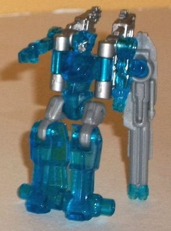
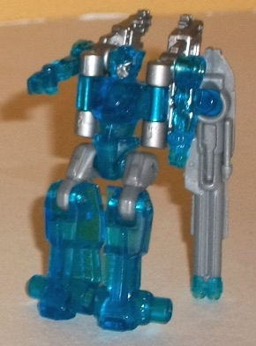
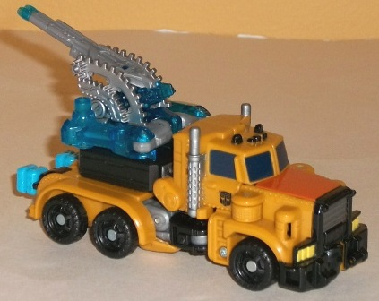
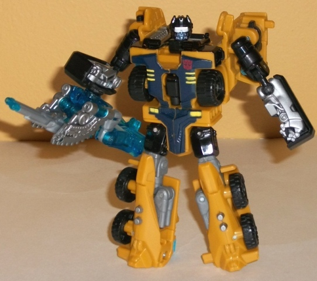
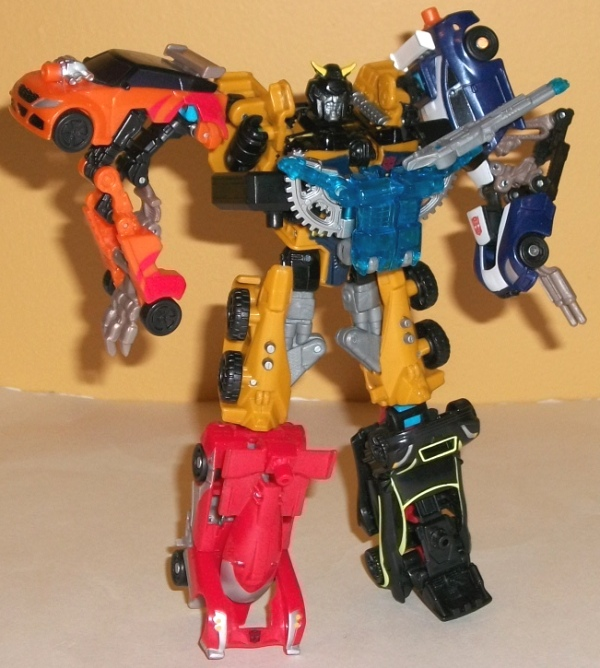

Caliburst
Caliburst

Allegiance : Minicon
Difficulty of Transformations : Very Easy
Color Scheme : Transparent aquamarine, light milky bluish gray, and silver
Individual Rating : 5.4
Huffer
w/ Caliburst
Caliburst

Allegiance
: Minicon
Difficulty of Transformations
: Very
Easy
Color Scheme
: Transparent aquamarine,
light milky bluish gray, and silver
Individual Rating
: 5.4
Caliburst's robot mode
is one of the weaker of the Power Core Minicons'. The legs look great,
as does the chest, head, and mold detailing (which there's TON of on this
little figure, though the transparent plastic an obscure that somewhat.
His arms are rather skinnny and two-dimensional, however, and the two "compass
halves" stick out behind his body so far that--particularly with his fairly
small feet-- he's not very stable. I do love the huge gun that's connected
to one of his arms, though, and it DOES help to stabilize him a bit if
he leans on it. As for movement, he can move at the hips, knees, shoulders,
and at the base of the gun. However, his knees and shoulders only can move
front-to-back, making him a little less articulated than most other Power
Core Minicons. As for his color scheme, the blue is a nice icy color, and
goes well with the milky gray and silver, seeing as how the latter two
are more neutral colors. Still, a few more silver paint apps-- or perhaps
copper or gold, to add in a third color-- would've helped a little more,
methinks.
Caliburst's vehicle
weapon mode is likely his strongest, with all his appendages and whatnot
folding up securely around his gun that looks like it's on a "gear crank"
due to the mold detailing. A very nice little weapon, there, especially
considering the gun can rotate. As for the robot weapon mode, it's a bit
weaker, as his robot legs just kinda hang behind the gun/gear bits, and
make for a rather large piece of kibble in that respect.
As for Caliburst's chest
armor mode, it's definitely one of the best of the Power Core Minicons'.
The gun hanging off of one side is a bit distracting, but the rest is exactly
what I want from a mode like this-- a symmetrical mode in roughly the same
proportions as a chest, with the gears on the sides giving it a bit more
individuality. Well done, there.
Caliburst has one a
somewhat weak robot mode, but the way his large "gears" and gun emplacement
figure into most of his other modes-- particularly his vehicle weapon mode--
is pretty good, and is likely where most of the design emphasis was placed.
Definitely an above-average Power Core Minicon, overall.
 Huffer
Huffer



Allegiance
: Autobot
Difficulty of Vehicle/Robot Transformation
:
Very Easy
Difficulty of Torso Transformation
:
Easy
Color Scheme
: Dull pale brownish
orange, black, and some dark glossy blue, light sky blue, silver, pale
light yellow, orange, transparent aquamarine, light milky bluish gray,
and light metallic silvery blue
Individual Rating
: 8.5
Huffer's vehicle mode
is a truck cab. Proportionally, this mode is pretty solid, particularly
for a Power Core Combiner-- the rear section is perhaps a bit longer than
it usually is, but other than that Huffer's fairly spot-on. There are a
few robot mode extras visible in this mode, though thankfully most of them
are minoir-- the sole exception to this are the combiner ports sticking
out the back end clear as day. Those are definitely an eyesore. His upper
legs are slightly visible from the sides of the vehicle mode, and although
the lower robot arms combine together to form that little black "raised
platform" on the back end of the cab, it's still an extra little box that
shouldn't be there. Again though, minor downsides there. The mold detailing
is a bit bipolar-- there are parts that are VERY detailed such as all the
little rivets along the sides, the wheels, and the front bumper, but there's
also large sections of rather undetailed plastic as well (particularly
most of the top of this mode). The sudden contrast doesn't seem quite right
in most cases. As for the color scheme, it's a bit reminscient of G1 Huffer's,
being dull orange, black, and dark blue (and thus the only Power Core Combiner
that's obviously meant to be a direct homage to a previous character).
It's not the most eye-catching color scheme, but the various colors do
contrast decently enough with each other, it's fairly original, and Huffer's
got plenty of paint apps, so no real issues there.
The transformation to
Huffer's robot mode is incredibly simple, but it works for the most part.
Proportionally his legs and arms are pretty spot-on, but his chest is way
too large, especially when compared to his rather tiny head. (There's also
a rather unsightly gap between his head and the front of his chest as a
result of his transformation.) And again, it shows the odd extremes of
Huffer's mold detailing here-- his head is EXTREMELY detailed to the point
where I can't make out whether his mouth's supposed to be a normal mouth
or some kinda gas mask/faceplate thing, while his chest has only the basic
mold details. As for vehicle kibble, he has a little, but just like in
his vehicle mode, it's not too bad-- his lower arms are obviously just
carved on the inside halves of that "black box" bit of his truck mode,
and the front third of the vehicle mode splits in half to flip behind his
shoulders. It may not be the most sightly (or unsightly) vehicle kibble,
but it slots into place very firmly, and it doesn't interfere with articulation
that much. Speaking of articulation, Huffer can move at the neck (at two
points), shoulders (restricted slightly because of the kibble behind them),
elbows (at two points), hips (at two points), and knees. It's not extraordinary
movement by any means, but it is serviceable. However, it should be noted
that Huffer's slightly back-heavy, and combined with is relatively small
feet, he's not the most stable Power Core Combiner in this mode (two of
the combiner ports serve as heels, but it's not enough).
The transformation to
torso mode is also fairly straightforward, so by and large it's not all
that different from the robot mode. However, because it's not meant to
be part of a bigger robot mode, the chest is now relatively in proportion,
and the new combiner head fits the proportions pretty well. (That said,
the detailing on the combiner face makes it look EVIL. Now exactly fitting
for an Autobot, though the light piping on the eyes works remarkably well.)
The arm combiner ports simply flipping out of the shoulder bits works remarkably
well, though just placing the regular robot arms at the side of the chest
is pretty weak, particularly since they don't tab into any place securely
in this configuration. (The torso head also makes a panel from part of
the back stick out a little, but this is a minor issue at best.) The top
of the regular robot head also sticks out rather blatantly from the top
of the chest. The upper legs of the torso mode are... okay, though they're
obviously just the regular robot legs extended out a bit more. Having the
gray hinges on the inside of the legs is a pretty odd, start contrast to
the flatter, more solid dull orange pieces that make up the most of the
upper legs. As far as movemenn in this mode, Huffer can move at the neck,
shoulders (at two points), hips (at two points), and knees, which is about
average for a Power Core Combiner. (The upper legs can also bend at the
knees of the regular robot mode, but that just looks wrong in this mode.)
Huffer's large, flat chest has a fold-out Powerlinx port right in the center,
so having Caliburst or another Minicon in chest armor mode put on there
happens to fits right in.
Huffer is a very simplistic,
straightforward design, but it works surprisingly well. No one mode is
amazing, but no one mode is terrible, either. So long as simplistic transformation's
don't bother you, I'd mildly recommend this guy.
Reviews by Beastbot